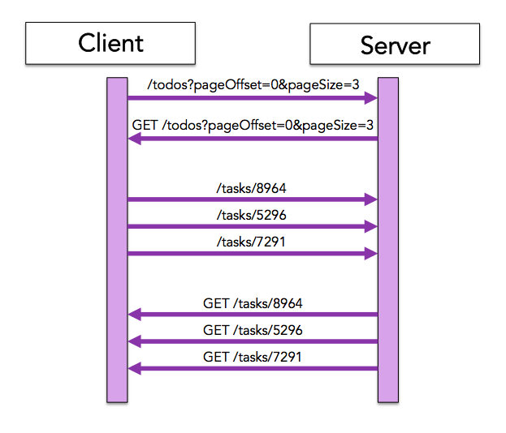
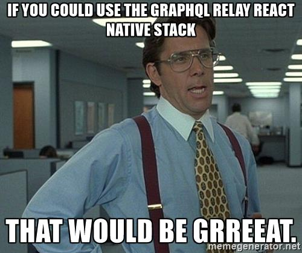

GraphQL & Relay
Artem Malyshev
@proofit404
What's wrong with REST?
Expand relations
{
"title": "Finish monthly growth report",
"category": "Growth Team",
"tasks": [
{"order": 1, "title": "Review samples"},
{"order": 2, "title": "Summarize"},
{"order": 3, "title": "Send to customer"},
...
],
}Custom endpoints
/todos_with_everything_i_need
/todos_with_everything_i_need_with_author_v2
/todos_with_everything_i_need_for_samsung_smart_tv
/tightly_coupled_endpoint_for_a_specific_clientGraphQL
@leebyron
Hello world
{
me {
name
}
}Hello world
{
{ "data": {
me { "me": {
name "name": "Artem"
} }
} }
}Schema
type Task {
id: ID!
title: String!
description: String!
createdBy: Employee!
assignedTo: Employee!
statusHistory: [Status]
comments: [Comment]
}

Relay
Relay
class Task extends React.Component {
render() {
return <li key={title}>
<b>{title}</b> {description}
</li>
}
}
Task = Relay.createContainer(Task, {
task: () => Relay.QL`
fragment on Task {
title,
description,
}
`,
});Nesting
class TaskList extends React.Component {
render() {
return <ul> {this.props.tasks.map(
task => <Task name={name} />
)} </ul>;
}
}TaskList = Relay.createContainer(TaskList, {
tasks: () => Relay.QL`
tasks {
${Task.getFragment('task')}
}`,
});Conditional fetching
Relay.createContainer(Task, {
initialVariables: { showComments: false },
task: () => Relay.QL`
fragment on Task {
title,
description,
comments @include(if: $showComments) {
author
text
}
}
`});Cache
{
query { "data": {
employees { "employees": [
id { "id": "Y3JlYXRlZF9hd" }
} ],
tasks { "tasks": [
id { "id": "C0tLTIwMTYtMD" }
} ]
} }
}And more
- Pagination
- Optimistic updates
- Deferred
- Subscriptions

Backend
Summarize
Pros
- No extra roundtrips
- No overfetching
- Frontend goodies
Cons
- Backend nightmare